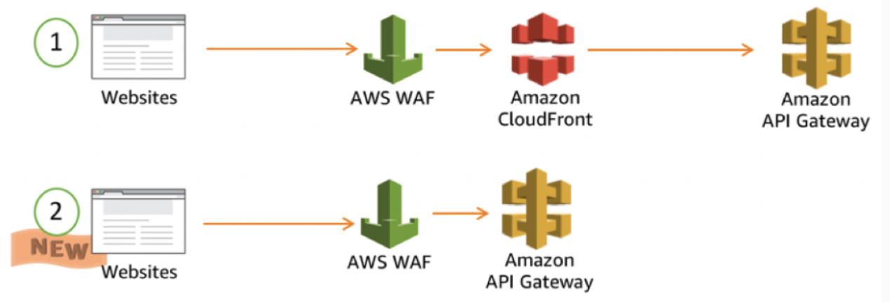

Security practices and automation
AWS Systems Manager (SSM)
Can be used to configure, schedule, automate and execute operations on AWS resources. Resources include IAM users, groups and roles as well as Lambda functions, EC2 ASG and S3 buckets.
To use SSM, the host needs to have the SSM-agent installed along with proper IAM permissions.
SSM can automate common and repetitive IT operations and management tasks across AWS resources. This can be done using JSON documents or on-demand using the RUN command.
Session Manager
SSM allows managing instances at scale without the need for bastions, SSH or remote sessions.
State Manager
Enables configuration management such that EC2 instances or on-prem instances are consistently configrued.
Patch manager
Allows applying OS or software patches to a large group of EC2 or on-prem instances.
- Patch Baseline: defines what patches get installed according to operating system and distribution.
- Patch Groups: act as grouping of compute resources i.e. what gets patched.
- Maintenance Windows: is the configuration item used to tie all this together.
- Run Command:
AWS-RunPatchbaselineis defined within the maintenance window and is used to perform the task on the target group.
AWS Inspector
Is an automated security assessment service that scans EC2 instance and container images for vulnerabilities and deviations from best practices.
AWS GuardDuty
Is a threat detection service that continuously monitors AWS accounts, workloads and data for malicious activity and unauthorised behaviour. It uses machine learning and threat intelligence.

AWS Trusted Advisor
Provides realtime guidance on provisioning resources according to AWS best practices.
It provides a number of checks in 5 major areas:
- Cost optimisation
- Performance
- Security
- Fault tolerance
- Service limits
It has 7 core checks that are free at a basic/developer tier:
- S3 bucket permissions check (not objects)
- Security groups check for ports with unrestricted access
- IAM use
- If root account has MFA enabled
- Checks permissions on EBS public snapshots
- Checks permissions o RDS public snapshots
- Identifies if you are over 80% usage of the 50 most common services
WAF (Web Application Firewall)
Is the AWS implementation of Layer 7 web application firewall; capable of understanding HTTP(S). It helps protect your web applications from common web exploits that could affect application availability, compromise security, or consume excessive resources.
WAF can protect global services like CloudFront but also regional services like ALB (Application Load Balancer).
Web ACL is associated with a WAF distribution and has Rules and Rule Groups that control how the WAF reacts.
AWS Network Firewall
It defines the VPC, Subnets and Firewall Policy.
